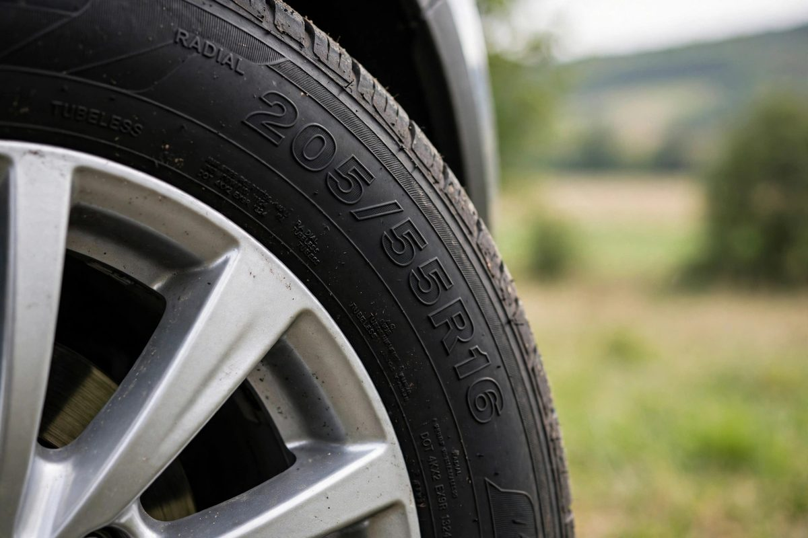
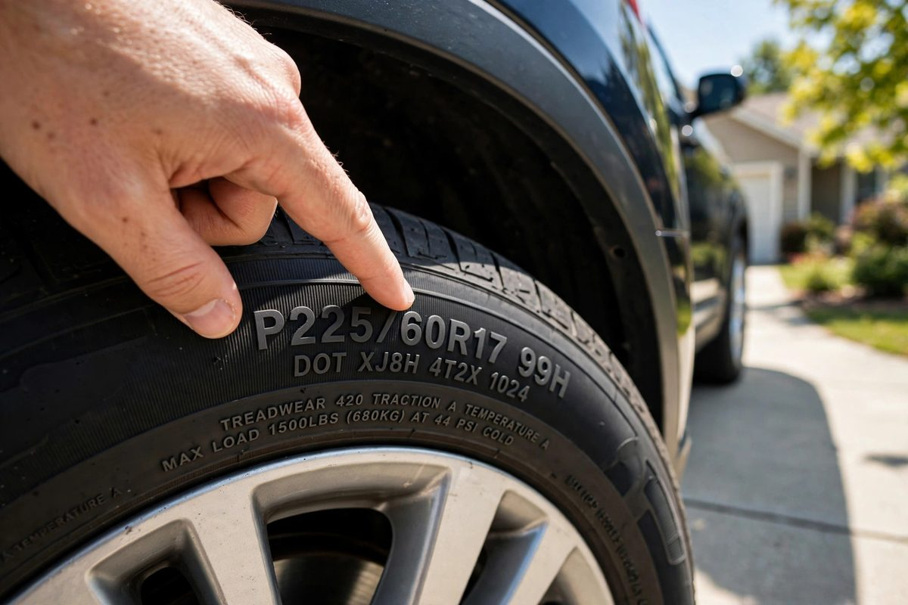
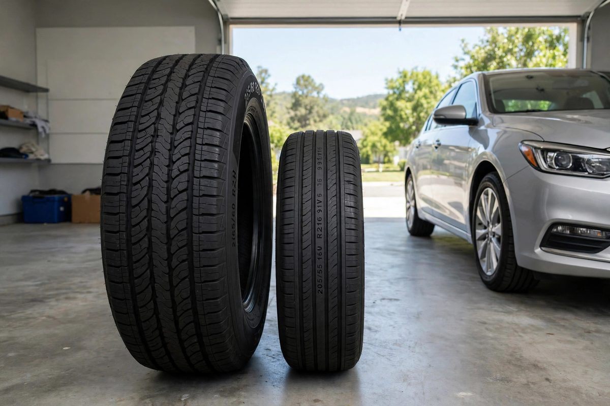

Home › Blog › How to Calculate Tire Size: A Simple Guide
How to Calculate Tire Size: A Simple Guide

Every tire has its size printed on the sidewall in a short code like 205/55R16 — but to most drivers, those numbers look like a secret language. They are not. Each number is one simple measurement, and once you know what they mean, you can work out your tire's real size in under a minute.
This guide shows you how to calculate tire size step by step: how to read the code, the formula for sidewall height and overall diameter, and a worked example. You will also learn how to compare two sizes, what a new size does to your speedometer, and how to check that it fits.
What Do the Numbers on a Tire Mean?
Take a common tire size: 205/55R16. It has three parts, and each one is a measurement. Once you can read one size, you can read them all.
- 205 — the section width. The first number is the width of the tire from one sidewall to the other, in millimetres. A 205 tire is 205 mm wide — about 8 inches.
- 55 — the aspect ratio. The second number is the height of the sidewall as a percentage of the width. A 55 means the sidewall is 55% as tall as the tire is wide.
- R — radial construction. The letter R stands for radial, the way the tire is built. Almost every car tire today is radial.
- 16 — the rim diameter. The last number is the diameter of the wheel rim the tire fits, in inches. A 16 tire fits a 16-inch wheel — and no other size.
A P before the numbers means the tire is made for a passenger car (P205/55R16).
The most common mistake is reading the aspect ratio as a measurement. A 45-series tire is not 45 mm tall: on a wide tire, a 45 profile can be taller than a 55 profile on a narrow one, because the number is a percentage of the width.
The Tire Size Formula
You only need two short formulas. First, the sidewall height: multiply the width by the aspect ratio and divide by 100.
Sidewall height (mm) = section width (mm) × aspect ratio ÷ 100
Then the overall diameter — the full height of the tire, from the ground to the top of the tread. It is the rim diameter plus two sidewalls, one above the rim and one below it.
Overall diameter = rim diameter + (2 × sidewall height)
The tricky part is the units: the width and sidewall are in millimetres, but the rim is in inches. Convert with 25.4 mm = 1 inch — divide the sidewall height in millimetres by 25.4 before adding it to the rim diameter.
Two more numbers are useful once you have the diameter. The circumference — the distance the tire covers in one full turn — is pi (3.1416) times the diameter. Revolutions per mile is 63,360, the inches in a mile, divided by the circumference. Tire Rack shows the same calculation worked out for a 225/45R17 tire.
How to Calculate Tire Size in 3 Steps
All you need is the size code from your tire and a calculator.
Step 1 — Find your tire size code
Look at the sidewall of any tire on your car: the size is printed in large raised numbers near the rim — for example, 205/55R16. You can also find it on the sticker on the driver's door frame, in your owner's manual, and sometimes on the fuel filler flap.
Use the size already on your car, not the size you are thinking of buying — your speedometer and safety systems were set up for it.

Step 2 — Work out the sidewall height
Multiply the width by the aspect ratio and divide by 100. For a 205/55R16 tire, that is 205 × 55 ÷ 100 = 112.75 mm — the height of one sidewall.
In inches, that is 112.75 ÷ 25.4 = 4.44 inches. Keep this number — you need it for the next step.
Step 3 — Work out the overall diameter and circumference
Add the rim diameter to two sidewalls. For our 205/55R16, the rim is 16 inches and each sidewall is 4.44 inches, so the overall diameter is 16 + (2 × 4.44) = 24.88 inches — 632 mm.
The circumference is 3.1416 × 24.88 = 78.2 inches, and the tire turns 63,360 ÷ 78.2 = about 811 times per mile.
Want to skip the maths? Try our free tire size calculator — enter your current size and any size you are considering, and it works out the diameter, circumference and speedometer difference.
Worked Example: Three Common Tire Sizes
Here is the full calculation for three common sizes, so you can see how the numbers change.
| Tire size | Sidewall height | Overall diameter | Circumference | Revs per mile |
|---|---|---|---|---|
| 205/55R16 | 112.75 mm (4.44 in) | 24.88 in | 78.2 in | 811 |
| 225/45R17 | 101.25 mm (3.99 in) | 24.97 in | 78.4 in | 808 |
| 245/45R18 | 110.25 mm (4.34 in) | 26.68 in | 83.8 in | 756 |
Notice the first two sizes: a 205/55R16 and a 225/45R17 have almost the same overall diameter — 24.88 and 24.97 inches. A wider tire with a lower profile on a bigger wheel can be nearly the same height. Tire shops call this plus-sizing.
The third size is different: a 245/45R18 is 26.68 inches tall, almost two inches taller than the other two. On a car built for a 205/55R16, it would raise the car, slow the speedometer, and very likely rub against the wheel arch. Diameter, not wheel size, decides whether a tire fits.
How to Compare Two Tire Sizes
Comparing sizes is where the calculation really pays off — usually because you are thinking of fitting a different size. Work out the overall diameter of both, then find the difference as a percentage of the original.
Difference (%) = (new diameter − old diameter) ÷ old diameter × 100
For example, moving from a 205/55R16 (24.88 in) to a 225/45R17 (24.97 in) is (24.97 − 24.88) ÷ 24.88 × 100 = 0.4% — so small your speedometer will not notice it.
As a rule of thumb, tire shops recommend keeping the overall diameter within about 3% of the original size. More than that, and your speedometer, odometer and safety systems start to read wrong. Staying within 1% is better still. Omni Calculator's tire size calculator works out the same comparison in plain numbers.

What a bigger tire does to your speedometer
Your speedometer is set for the circumference of your original tires. If the new tires are taller, each turn covers more road, so your real speed is higher than shown. If they are shorter, your real speed is lower.
True speed = speed shown × new diameter ÷ old diameter. With a tire 3% taller, 60 mph on the speedometer means a true speed of 61.8 mph — enough to matter at a speed limit.
The odometer is affected the same way: taller tires make it count fewer miles than you really drove, which can also make your MPG look worse than it is.
What Else the Sidewall Tells You
The size is only part of the story. The full code — 205/55R16 91V, for example — ends with two more pieces of information that matter when you buy new tires.
Load index
The number after the size is the load index: the maximum weight each tire can carry. A load index of 91 means 615 kg (1,356 lb) per tire. Never fit a lower load index than your car needs — the right number is on the door sticker or in the owner's manual.
Speed rating
The letter after the load index is the speed rating: the fastest speed the tire is made for. V means up to 149 mph (240 km/h), H means up to 130 mph, and T means up to 118 mph. Match or beat the rating your car came with, even if you never drive that fast.
You will also see the DOT code, which ends in a four-digit date: the week and year the tire was made. A code ending in 2324 means week 23 of 2024. Tires age even when not used, so check the date.
Why Tire Size Matters
Tire size affects more than whether the tire fits on the wheel. It changes how your car drives, how much fuel it uses, and how safe it is.
Handling and ride
A lower profile gives sharper steering but a firmer ride, because there is less sidewall to flex. A taller sidewall absorbs bumps better but feels less precise in corners — which is why sports cars wear low-profile tires.
Clearance
A tire that is too tall can rub against the wheel arch or suspension at full lock or over a bump; too wide, and it can rub on the inside. Rubbing damages the tire and can be dangerous, so check the clearance with the steering turned fully both ways.
Fuel economy
Wider tires usually have more rolling resistance, which can lower your MPG slightly. Taller tires raise your effective gearing, which may help MPG on the motorway but hurt acceleration around town.
Safety systems
ABS, traction control and stability control all expect a certain tire size. A big change in diameter can confuse them, because the wheels turn at speeds the system does not expect.
How to Find the Right Tire Size for Your Car
The easiest answer is the size your car came with — on the driver's door jamb sticker, in the owner's manual, and on the tires already fitted. If you are happy with how your car drives, there is no need to change it.
If you want a different size, keep the overall diameter within about 3% of the original, keep the load index and speed rating the same or higher, and check the new tire clears the arches and suspension.
For trucks and SUVs, sizes are sometimes written in inches, such as 33x12.50R15: 33 inches tall, 12.50 inches wide, on a 15-inch rim.
Frequently asked questions
How do I calculate tire size?
Read the size code on the sidewall, such as 205/55R16. Multiply width by aspect ratio and divide by 100 for the sidewall height: 205 × 55 ÷ 100 = 112.75 mm. Divide by 25.4 for inches (4.44 in), then add two sidewalls to the rim: 16 + (2 × 4.44) = 24.88 inches.
What does 205/55R16 mean?
205 is the tire's width in millimetres, 55 is the aspect ratio (the sidewall is 55% of the width), R means radial construction, and 16 is the rim diameter in inches.
How much can I change my tire size?
Keep the overall diameter within about 3% of your original tires; within 1% is better still. A bigger change affects your speedometer, odometer and safety systems, and a tire that is too tall or wide can rub.
Does a bigger tire make my speedometer wrong?
Yes. Taller tires make the speedometer read low: your real speed is higher than the number shown. With a tire 3% taller, 60 mph on the speedometer means a true speed of 61.8 mph.
Where do I find my car's tire size?
On the sidewall of your current tires, the sticker on the driver's door frame, and in your owner's manual. If they disagree, use the door sticker size.